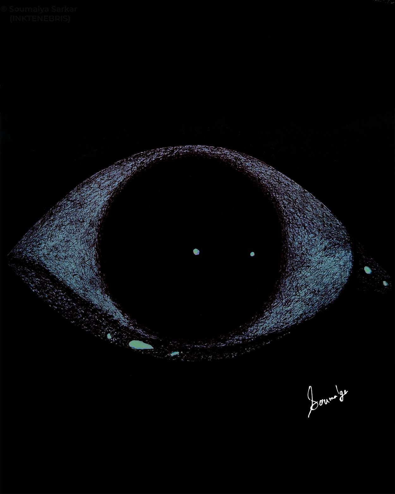
DRAWN FROM THE DARK
INKTENEBRIS is a collection of surreal ballpoint pen illustrations exploring psychological horror, distorted identity, dream imagery and isolation.
Every artwork is created entirely by hand through dense layers of ink and obsessive mark-making.
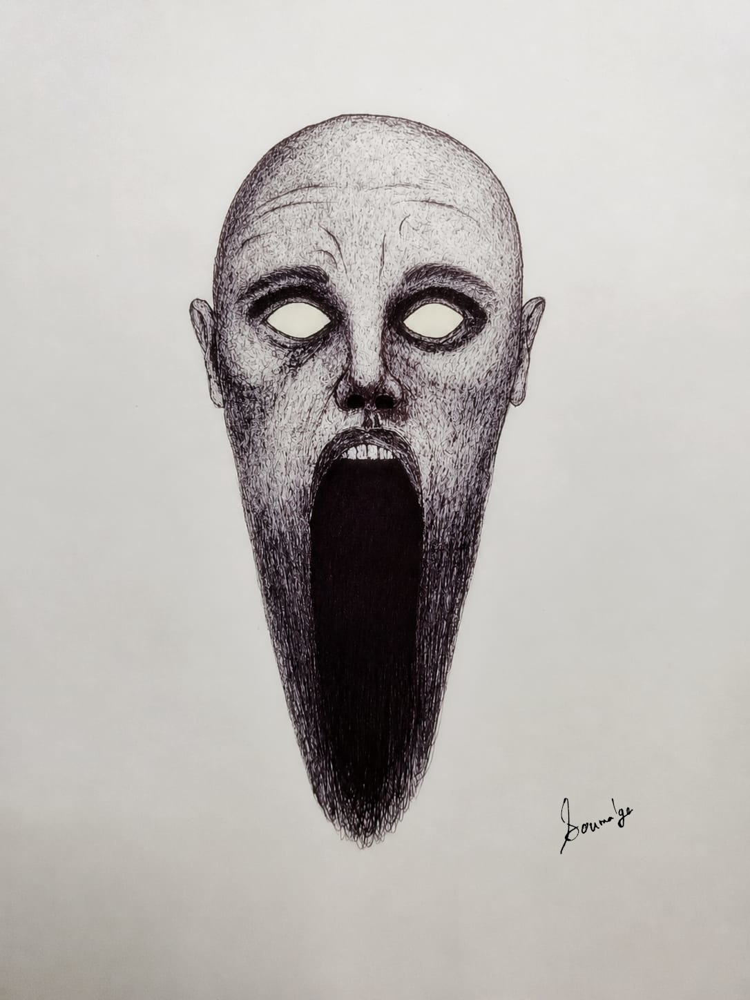
WITHOUT EYES
Psychological ballpoint illustration exploring observation, isolation and distorted identity.
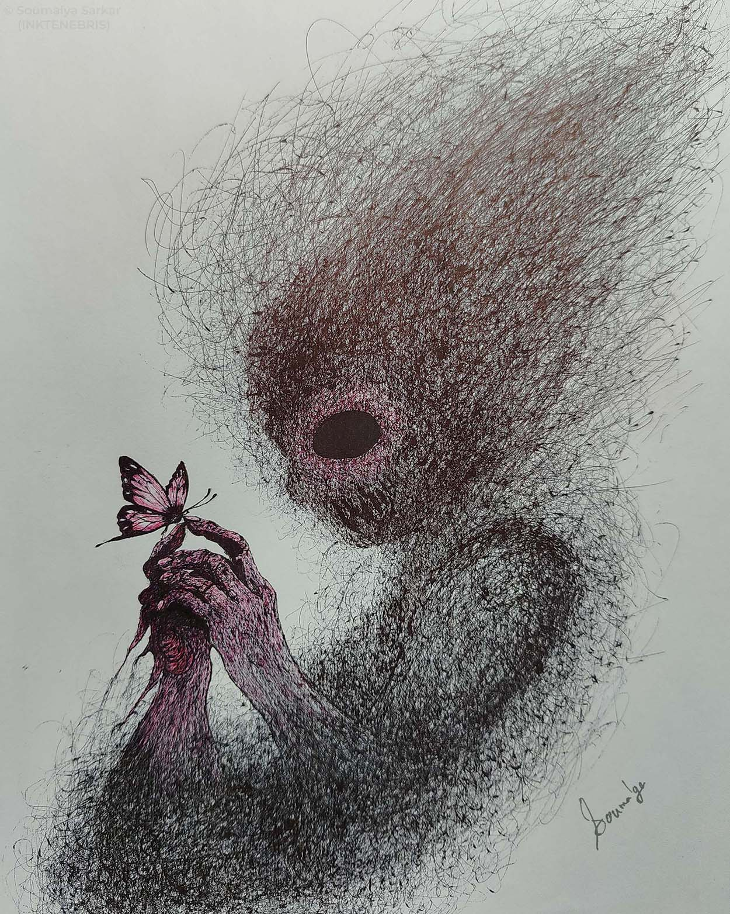
THE HOLLOW ONE
A study of emptiness and perception rendered entirely with ballpoint pen.
SELECTED WORKS
A collection of surreal ballpoint pen drawings exploring identity, fear, isolation and transformation.
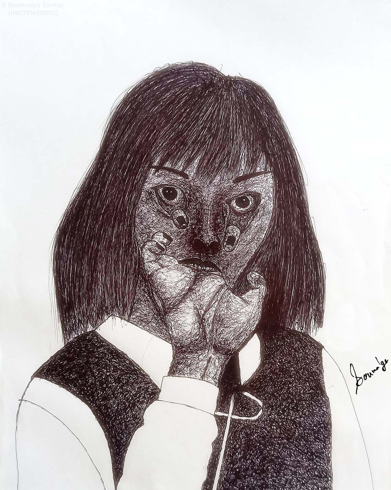
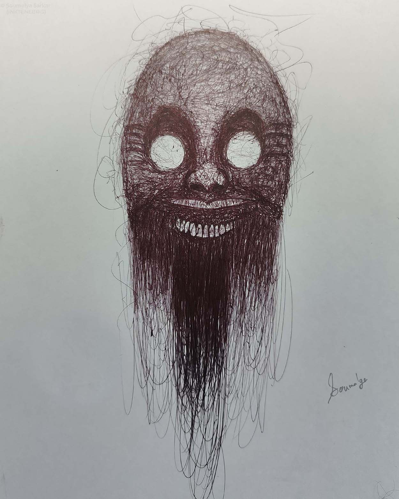
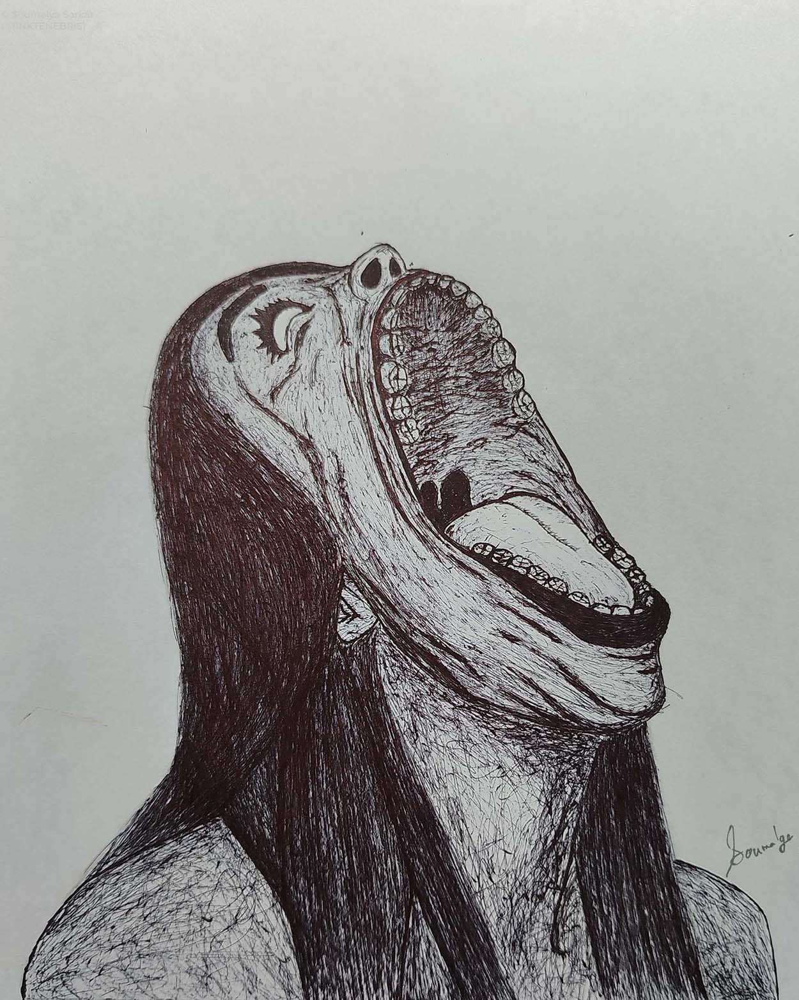
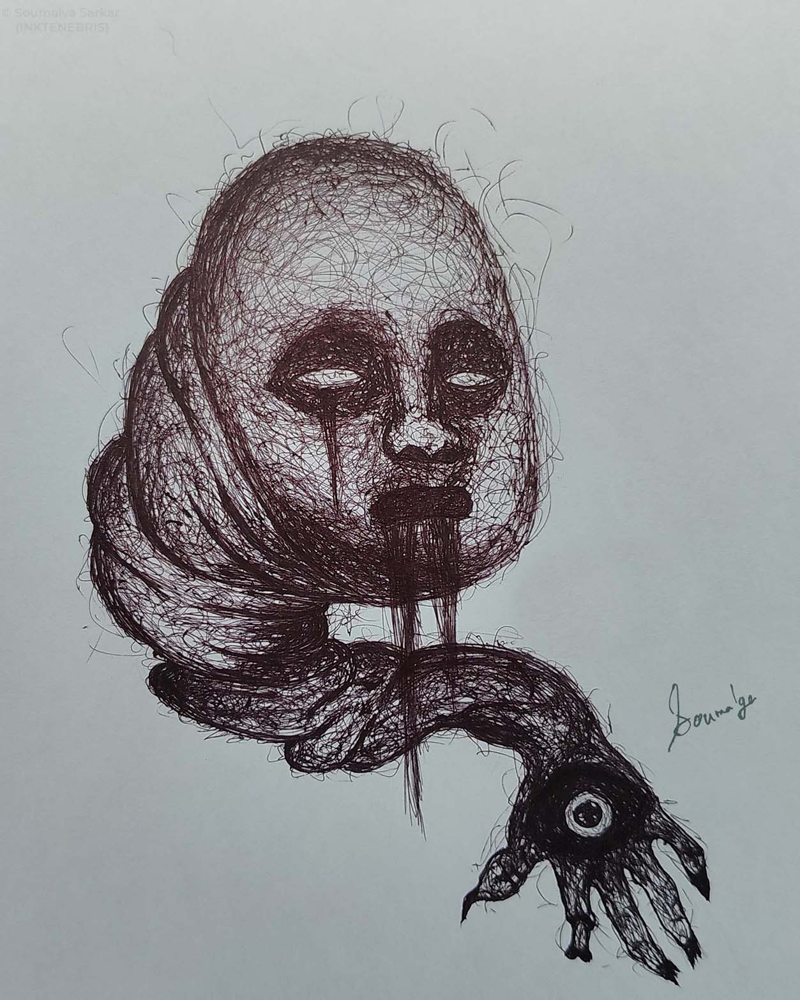
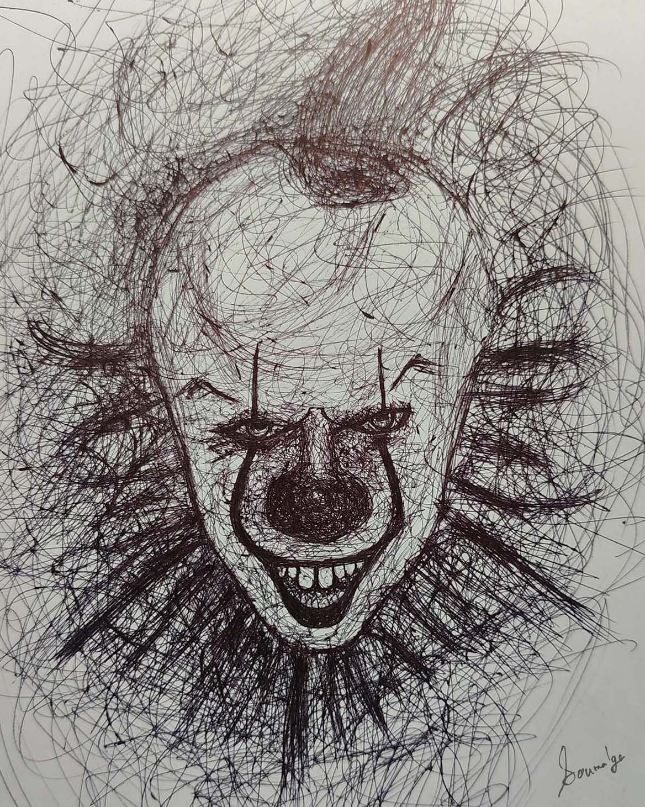
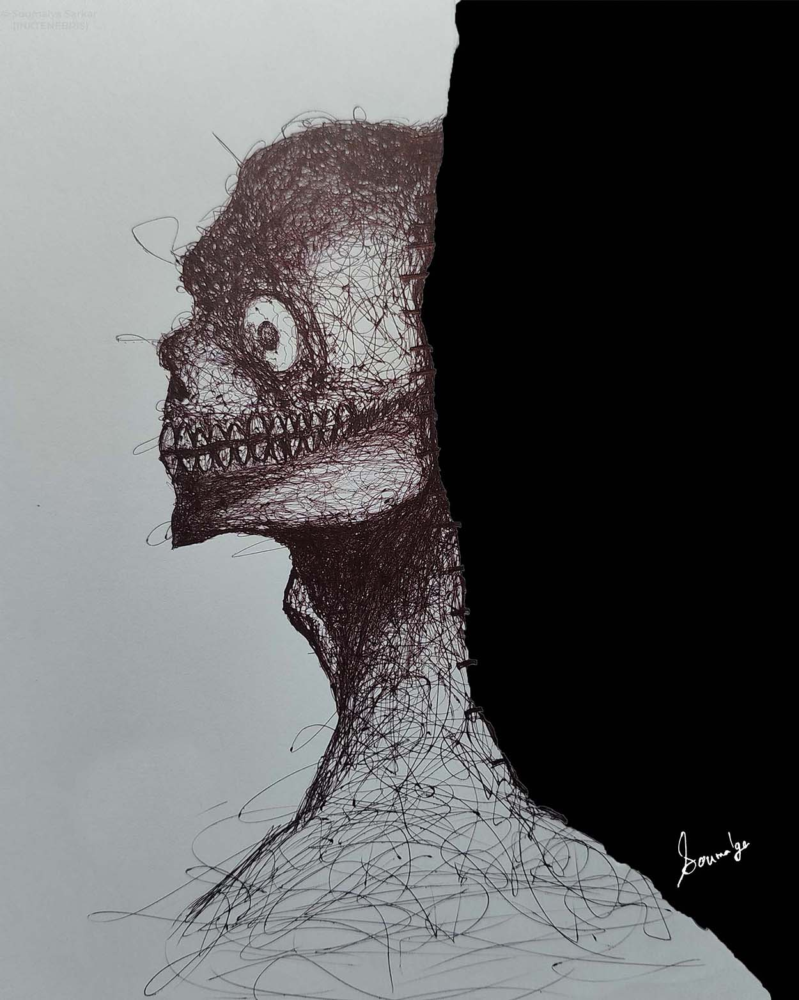
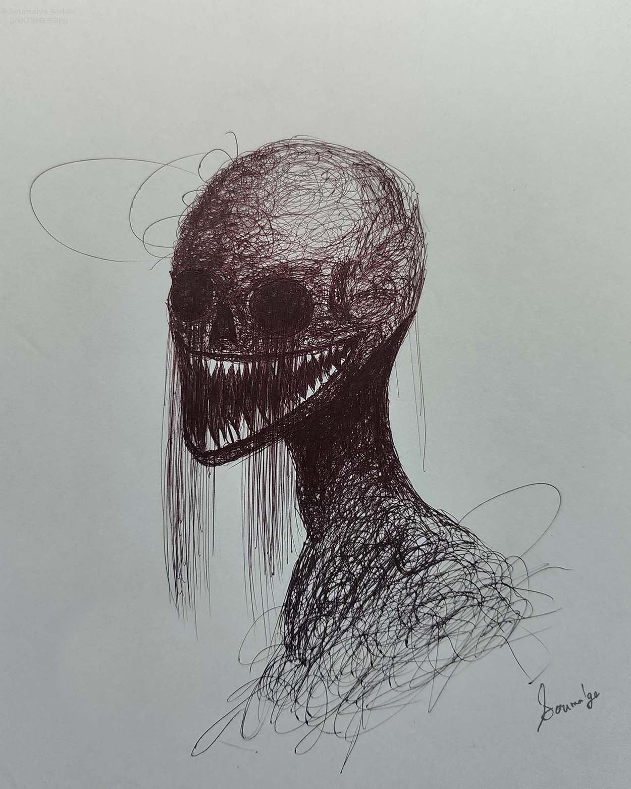
ART IS NOT MEANT TO COMFORT.
It is meant to disturb, question and linger. Every drawing is an attempt to visualize thoughts that usually remain hidden.
SOUMALYA
SARKAR
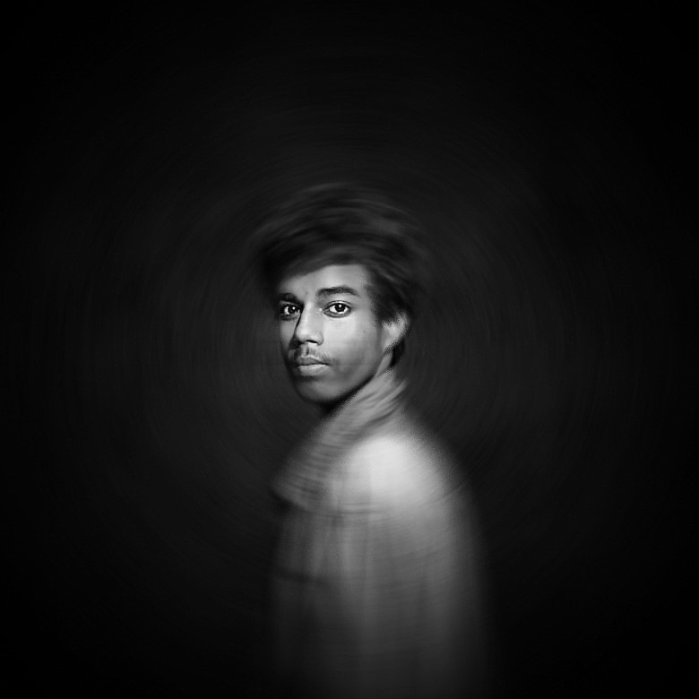
INKTENEBRIS is the artistic practice of Soumalya Sarkar, a dark surreal artist dedicated to exploring the emotional and psychological landscapes hidden beneath everyday perception. Working exclusively with ballpoint pen, he creates intricate monochromatic drawings where beauty and discomfort coexist.
The work is driven by fascination with transformation, memory, identity, fear and the subconscious. Human figures dissolve into symbols, familiar forms become unsettling, and ordinary objects take on new meaning. Each artwork is approached as an open-ended narrative, allowing viewers to discover their own interpretations within the imagery.
Every drawing is built through countless layers of ink, requiring hours of precision, patience and concentration. The slow process becomes part of the art itself, mirroring the gradual emergence of ideas, emotions and hidden thoughts from darkness into light.
Through INKTENEBRIS, Soumalya seeks to create artwork that lingers in the mind long after it has been seen—images that disturb, question and resonate rather than simply decorate. The goal is not comfort, but connection through curiosity, mystery and imagination.
Contact
Available for commissions, exhibitions, gallery opportunities, publications, interviews, collaborations and licensing.
Based in India · Working worldwide
EMAILJOIN THE DARKNESS
Receive new artworks, behind-the-scenes sketches, and exclusive updates from INKTENEBRIS.